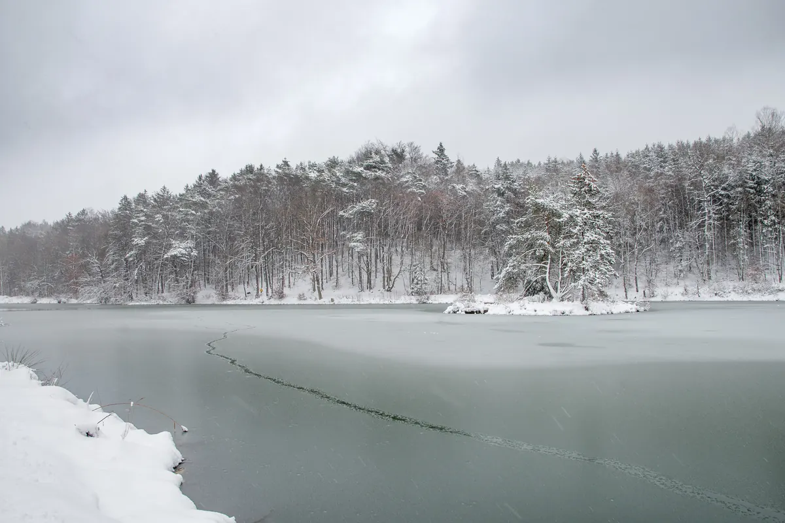

Save on Utility Costs While Your Property Is Vacant This Winter
Introduction
As temperatures drop, the importance of preparing your home or investment property for winter becomes clear. Whether you’re a homeowner or manage a vacant rental, winterizing is not just about preventing costly damage—it’s also an opportunity to save on utility bills. At Angle Stop Plumbing, we understand the unique challenges that come with maintaining vacant properties during the colder months. In this blog, we’ll share practical steps to protect your investment and keep utility costs low while the property is unoccupied.

Why Winterizing Matters
Cold weather can wreak havoc on plumbing systems, insulation, and heating equipment. Frozen pipes, water leaks, and inefficient heating can lead to expensive repairs and higher bills. Taking time to winterize your property helps you avoid these headaches and ensures that your home stays safe and efficient until spring.
Step-by-Step Guide to Winterizing Your Property
- Turn Off and Drain the Water Supply
- One of the most crucial steps is to prevent pipes from freezing and bursting. Shut off the main water valve and drain all pipes by opening faucets and flushing toilets. Don’t forget outdoor spigots and sprinkler systems.
- Protect Plumbing Fixtures
- Add non-toxic antifreeze to toilets, sinks, and drains to prevent any remaining water from freezing. This is especially important for homes that will remain vacant for extended periods.
- Insulate Pipes
- Install pipe insulation sleeves or wrap exposed pipes in unheated areas, such as basements, crawl spaces, and attics. This simple measure can drastically reduce the risk of frozen pipes.
- Set the Thermostat
- Don’t turn off the heat entirely. Instead, set your thermostat to a minimum of 55°F to keep the interior warm enough to prevent freezing. Modern smart thermostats allow you to monitor and adjust temperatures remotely for added peace of mind.
- Seal Windows and Doors
- Check for drafts and seal gaps with weatherstripping or caulk. Well-sealed windows and doors keep the cold out and help you save on heating costs.
- Unplug Appliances and Electronics
- Unplug unnecessary appliances and electronics to prevent phantom electricity usage and reduce utility costs while the property is vacant.
- Clean Gutters and Downspouts
- Clogged gutters can lead to water damage when snow and ice melt. Clear them out to ensure proper drainage away from your property.
- Check the Roof and Exterior
- Inspect the roof for missing shingles or leaks and repair as needed. Trim any overhanging branches that could break and damage the property during winter storms.
Additional Money-Saving Tips
- Lower the Water Heater Temperature: Set it to “vacation mode” or the lowest setting to prevent unnecessary heating.
- Install Timers or Motion Sensors: For exterior lighting, use timers or motion sensors to limit power usage.
- Monitor Utility Usage Remotely: Invest in smart meters or apps to track and control energy consumption from anywhere.
Angle Stop Plumbing: Your Winterization Partner
Angle Stop Plumbing specializes in helping homeowners and property managers winterize vacant homes and investments. Our expert technicians can inspect your property, identify potential vulnerabilities, and perform all necessary winterization services. Protect your investment, avoid costly repairs, and enjoy peace of mind this winter by scheduling a service with us.
Conclusion
Don’t wait until the first freeze to prepare your property. By following these winterization tips, you’ll safeguard your home or investment, save on utility costs, and reduce the risk of damage while your property is vacant. Contact Angle Stop Plumbing today for a professional assessment and comprehensive winterization services.
Ready to winterize your property? Contact Angle Stop Plumbing to schedule your appointment and get expert help this winter!